碧螺春
碧螺春是中国传统名茶，中国十大名茶之一，属于绿茶类，已有1000多年历史。碧螺春产于江苏省苏州市吴县太湖的东洞庭山及西洞庭山（今苏州吴中区）一带，所以又称“洞庭碧螺春”。
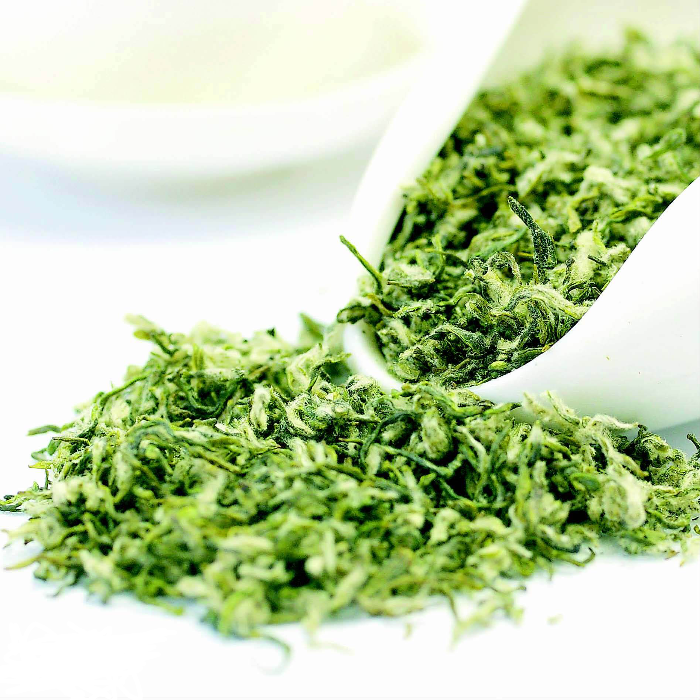唐朝时就被列为贡品，古人们又称碧螺春为“功夫茶”、“新血茶”。高级的碧螺春，茶芽之细嫩0.5公斤干茶需要茶芽6-7万个。炒成后的干茶条索紧结，白毫显露，色泽银绿，翠碧诱人，卷曲成螺，产于春季，故名“碧螺春”。此茶冲泡后杯中白云翻滚，清香袭人，是中国的名茶。主要工序为杀青、揉捻、搓团显毫、炒青。
历史发展
碧螺春茶已有1000多年历史，当地民间最早叫洞庭茶，又叫吓煞人香。相传有一尼姑上山游春，顺手摘了几片茶叶，泡茶后奇香扑鼻，脱口而道“香得吓煞人”，由此当地人便将此茶叫“吓煞人香”。到了清代康熙年间，康熙皇帝视察时品尝了这种汤色碧绿、卷曲如螺的名茶，倍加赞赏，但觉得“吓煞人香”其名不雅，于是题名“碧螺春”。关于此茶名称的来历除了康熙皇帝巡幸太湖时亲赐之外，也有碧螺春在明代时就已有茶名的传说，还有一种巧妙的解释说取其色泽碧绿，卷曲如螺，春季采制，又采自碧螺峰这些特点，因而命名为碧螺春。此茶有悠久历史，在清代康熙年间就已成为年年进贡的贡茶。
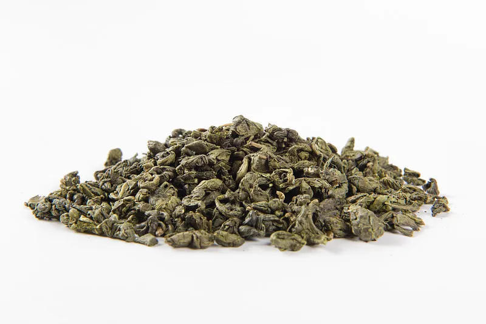洞庭碧螺春产区是中国著名的茶、果间作区。茶树和桃、李、杏、梅、柿、桔、白果、石榴、泉城红、泉城绿、等果木交错种植。茶树、果树枝桠相连，根脉相通，茶吸果香，花窨茶味，陶冶着碧螺春花香果味的天然品质。正如明代《茶解》中所说：“茶园不宜杂以恶木，唯桂、梅、辛夷、玉兰、玫瑰、苍松、翠竹之类与之间植，亦足以蔽覆霜雪，掩映秋阳。” 茶树、果树相间种植，令碧螺春茶独具天然茶香果味，品质优异。其成品茶外形紧密，条索纤细，嫩绿隐翠，清香幽雅，鲜爽生津，汤色碧绿清澈，叶底柔匀，饮后回甘。

碧螺春茶条索紧结，卷曲如螺，白毫毕露，银绿隐翠，叶芽幼嫩，冲泡后茶叶徐徐舒展，上下翻飞，茶水银澄碧绿，清香袭人，口味凉甜，鲜爽生津，早在唐末宋初便列为贡品。碧螺春，名若其茶，色泽碧绿，形似螺旋，产于早春。
外形条索纤细，茸毛遍布，白毫隐翠；泡成茶后，色嫩绿明亮，味道清香浓郁，饮后有回甜之感。人们赞道：“铜丝条，螺旋形，浑身毛，花香果味，鲜爽生津”。洞庭碧螺独特的花果香，主要是因为它生长在果园之中，并且接受了洞庭特有水土的滋养。其他碧螺春是没有清香和果香的，只有沃土气和青叶气。
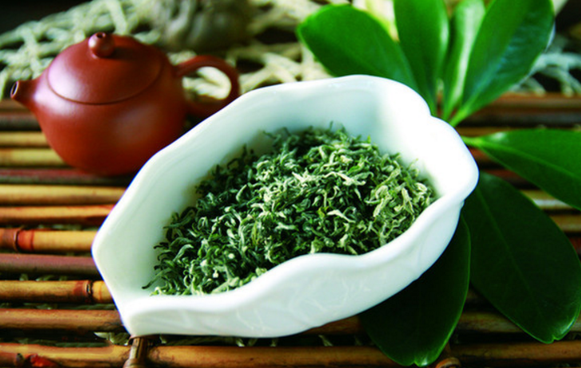洞庭碧螺春是中国名茶的珍品，以形美、色艳、香浓、味醇“四绝”闻名于中外。碧螺春始于何时，名称由来，说法颇多。据清代《野史大观》（卷一）载：“洞庭东山碧螺峰石壁，产野茶数株，土人称曰：‘吓煞人香’。康熙己卯……抚臣朱荦购此茶以进……，以其名不雅驯，题之曰碧螺春。自地方有司，岁必采办进奉矣。”又据相传，明朝期间，宰相王鳌，是东后山陆巷人，“碧螺春”名称系他所题。
据《随见录》载“洞庭山有茶，微似岕而细，味甚甘香，俗称‘吓煞人’，产碧螺峰者尤佳，名‘ 碧螺春’”。若以此为实，则碧螺春茶应始于明朝，在乾隆下江南之前就已名声显赫了。
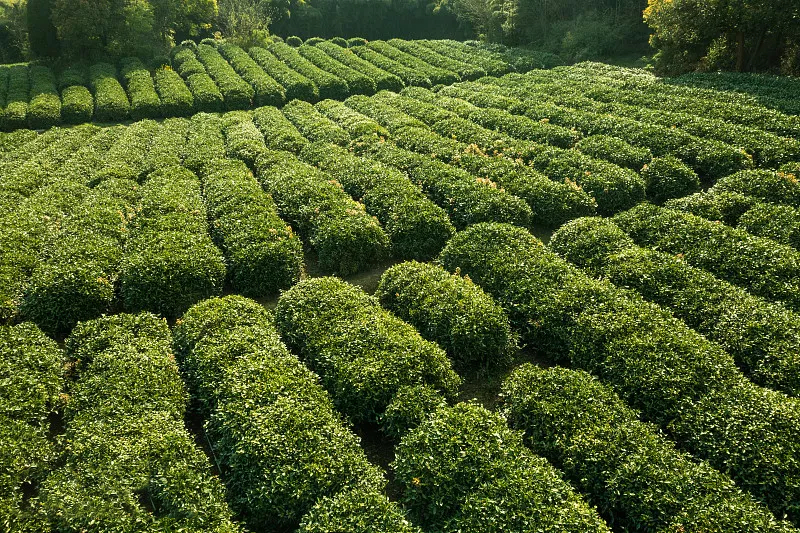清代王应奎《柳南随笔》记载：清圣祖康熙皇帝，于康熙三十八年（1699）春，第三次南巡车驾幸太湖。巡抚宋荦从当地制茶高手朱正元处购得精制的“吓煞人香”进贡，帝以其名不雅驯，题之日“碧螺春”。这即是碧螺春雅名由来的故事之一。后人评曰，此乃康熙帝取其色泽碧绿，卷曲似螺，春时采制，又得自洞庭碧螺峰等特点，钦赐其美名。从此碧螺春遂闻名于世，成为清宫的贡茶了。
2009年起，洞庭碧螺春茶将实施新的国家产品质量标准，新标准的实施，将统领碧螺春茶产业发展的核心，调整茶叶种植、加工生产、销售消费及政府监管的各个领域。
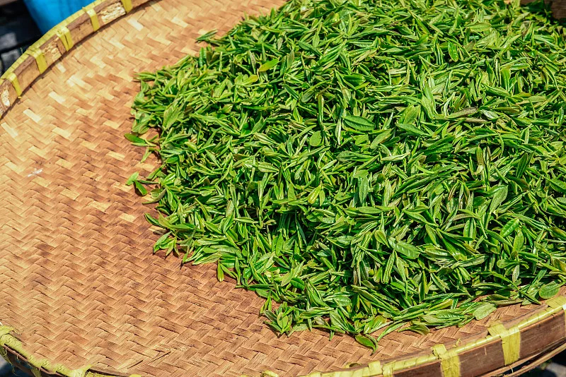产地分布
碧螺春，产于太湖东洞庭山及西洞庭山，故命名洞庭碧螺春。2002年经国家质量监督检验总局批准，获得原产地域标志产品保护。
西山镇（今金庭镇）全境十二个行政村都种茶。重点茶区在秉场、石公堂里、东村、衙甪里、东河、缥缈村一带，其余东蔡、林屋、庭山、蒋东、元山各村也有分布。茶园面积965公顷。东山镇全境十二个行政村中，茶区主要分布在山区的莫厘、碧螺、双湾、杨湾、陆巷五个村。
加工工艺
采摘
碧螺春采摘有三大特点：一是摘得早，二是采得嫩，三是拣得净。每年春分前后开采，谷雨前后结束，以春分至清明采制的明前茶品质最为名贵。通常采芽叶初展，芽长1.6～2.0厘米的原料，叶形卷如雀舌，称之为“雀舌”，炒制500克高级碧螺春约需采6.8～7.4万颗芽头，历史上曾有500克干茶达到9万颗左右芽头，可见茶叶之幼嫩，采摘功夫之深非同一般。细嫩的芽叶，含有丰富的氨基酸和茶多酚。优越的环境条件，加之优质的鲜叶原料，为碧螺春品质的形成提供了物质基础。
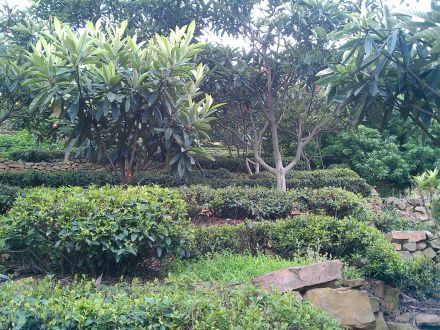采回的芽叶必须及时进行精心拣剔，剔去鱼叶和不符标准的芽叶，保持芽叶匀整一致。通常拣剔一公斤芽叶，需费工2～4小时。其实，芽叶拣剔过程也是鲜叶摊放过程，可促使内含物轻度氧化，有利于品质的形成。一般5~9时采，9～15时拣剔15时～晚上炒制，做到当天采摘，当天炒制，不炒隔夜茶。
杀青
在平锅内或斜锅内进行，当锅温190～200°C时，投叶500克左右，以抖为主，双手翻炒，做到捞净、抖散、杀匀、杀透、无红梗无红叶、无烟焦叶，历时3~5分钟。
揉捻
锅温70～75°C，采用抖、炒、揉三种手法交替进行，边抖，边炒，边揉，随着茶叶水分的减少，条索逐渐形成。炒时手握茶叶松紧应适度。太松不利紧条，太紧茶叶溢出，易在锅面上结“锅巴”，产生烟焦味，使茶叶色泽发黑，茶条断碎，茸毛脆落。当茶叶干度达六、七成干，时间约10分钟左右，继续降低锅温转入搓团显毫过程。历时12～15分钟左右。
搓团显毫
是形成形状卷曲似螺、茸毫满披的关键过程。锅温50～60°C，边炒边用双手用力地将全部茶叶揉搓成数个小团，不时抖散，反复多次，搓至条形卷曲，茸毫显露，达八成干左右时，进入烘干过程。历时13~15分钟。
炒青
采用轻揉、轻炒手法，达到固定形状，继续显毫，蒸发水分的目的。当九成干左右时，起锅将茶叶摊放在桑皮纸上，连纸放在锅上文火烘至足干。锅温约30～40°C，足干叶含水量7%左右，历时6～8分钟。全程约为40分钟左右。
炒制
手不离茶，茶不离锅，揉中带炒，炒中有揉，炒揉结合，连续操作，起锅即成。
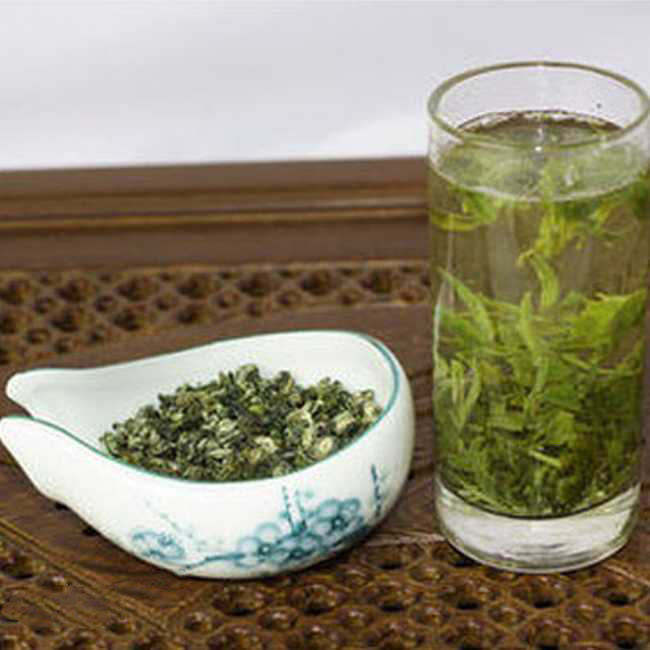品级分类
洞庭碧螺春的国家标准碧螺春茶分为五级：分别为特一级、特二级、一级、二级、三级。炒制锅温、投叶量、用力程度，随级别降低而增加。即级别低锅温高，投叶量多，做形时用力较重。
上等的碧螺春银白隐翠，条索细长，卷曲成螺，身披白毫，冲泡后汤色碧绿清澈，香气浓郁，滋味鲜醇甘厚，回甘持久。伪劣的碧螺春则颜色发黑，披绿毫，暗淡无光，冲泡后无香味，汤色黄暗如同隔夜陈茶。
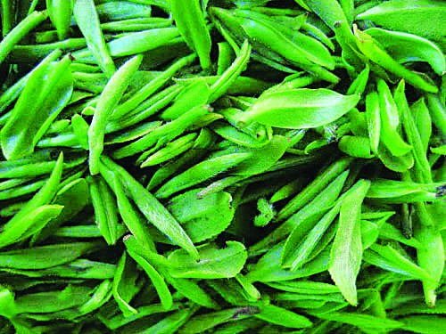碧螺春的品质优异，据清末震钧（1857～1918年）所著《茶说》中道：“茶以碧萝（螺）春为上，不易得，则苏之天池，次则龙井；岕茶稍粗…….....次六安之青者（今六安瓜片）”。可见，碧螺春在历史上就荣以为冠。其品质特点是：条索纤细、卷曲成螺，满身披毫，银白隐翠，香气浓郁，滋味鲜醇甘厚，汤色碧绿清澈，叶底嫩绿明亮。有“一嫩（芽叶）三鲜”（色、香、味）之称。
春茶分级
碧螺春分7级，芽叶随1～7级逐渐增大，茸毛逐渐减少。当地茶农对碧螺春描述为：“铜丝条，螺旋形，浑身毛，花香果味，鲜爽生津。
等级标准
国家标准对洞庭碧螺春茶按产品质量分为特一级、特二级、一级、二级、三级五个等级，其中特一级、特二级最为名贵。芽叶随1～7级逐渐增大，茸毛逐渐减少。炒制锅温、投叶量、用力程度，随级别降低而增加，即级别低锅温高，投叶量多，做形时用力较重。碧螺春茶每年春分前后采摘，谷雨前后结束，以春分至清明采制的明前碧螺春茶品质最为上乘。通常采一芽一叶初展，芽长1.6—2.0厘米的原料，叶形卷如雀舌，称之“雀舌”。 一般过了4月20日的茶叶，当地人就不叫碧螺春了，而叫炒青。
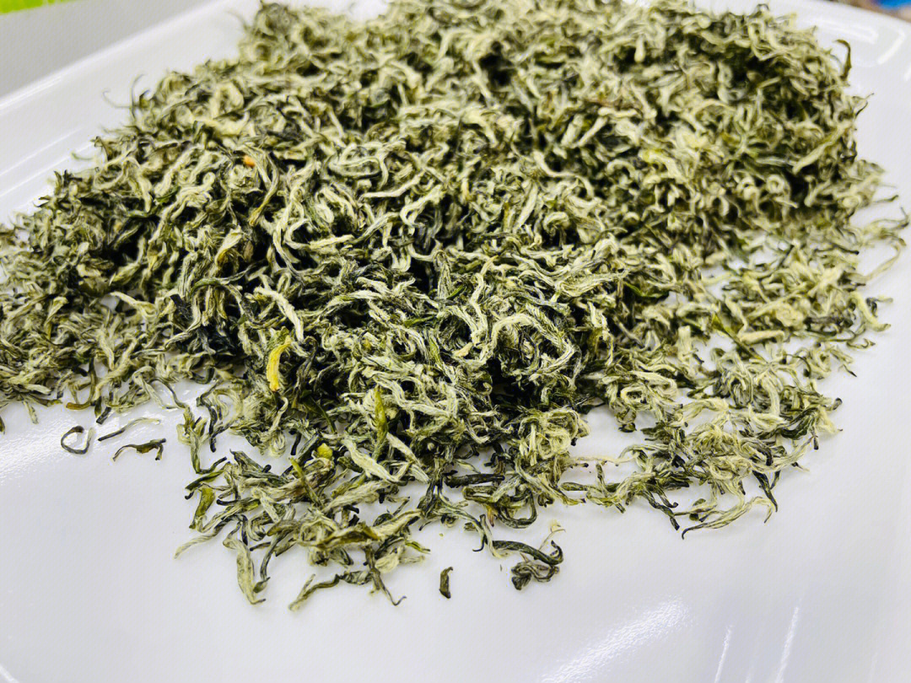特一级：条索纤细，卷曲成螺，满身批毫，银绿隐翠，色泽鲜润，香气嫩香清幽，滋味甘醇鲜爽，汤色嫩绿清澈明亮，叶底嫩匀多芽，在鲜叶挑拣上从碧螺春茶一芽一叶(俗称一棋一xxx芽似xxx叶如旗)炒制，改为单芽。
特二级：条索纤细，卷曲成螺，茸毛披覆，银绿隐翠，清香文雅，浓郁甘醇，鲜爽生津，回味绵长。叶底嫩匀多芽.特二级茶是碧螺春中的上品。
一级：条索尚纤细,卷曲成螺,白毫批覆,匀整,嫩爽清香，滋味鲜醇爽口，汤色绿而明亮、，叶底细嫩,绿,明亮.是挑拣一芽一 叶而炒制有"一嫩(芽叶)三鲜"(色、香、味)之称。
二级：卷曲如螺，白毫毕露，银绿隐翠，叶芽幼嫩，冲泡后茶味徐徐舒展，上下翻飞，茶水银澄碧绿，清香袭人，口味凉甜，鲜爽生津。
三级：条索纤细，卷曲成螺，茸毛披覆，银绿隐翠，清香文雅，浓郁甘醇，鲜爽生津，回味绵长，是办公室及居家日常用茶的首选。
特级：炒青价格低，产期大约四月既雨前茶，此茶口味较早春的茶叶稍浓，耐泡。
一级炒青茶：外形尚成螺,色泽深绿。尚整，稍有青壳碎片，滋味尚纯正，汤色黄绿，叶底尚嫩欠匀，稍有青张，绿稍深。
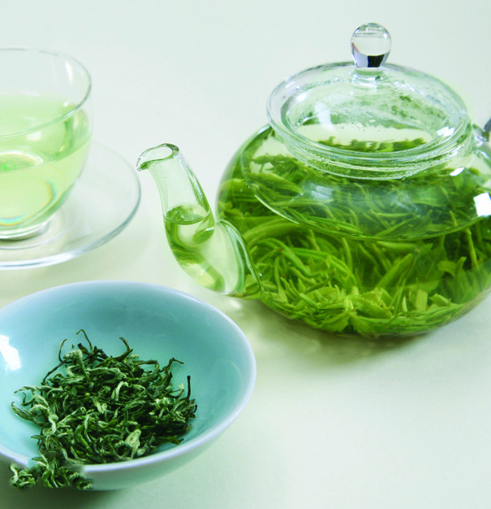品茗指南
鉴别方法
看外观色泽：没有加色素的碧螺春色泽比较柔和自然，加色素的碧螺春看上去颜色鲜艳，发绿、有明显着色感。
看茶汤色泽：把碧螺春用开水冲泡后，没有加色素的汤色看上去比较清澈柔和、青黄明亮，加色素茶汤的看上去颜色比较鲜艳，明显发绿。
龙井和碧螺春的区别
碧螺春为洞庭山产，太湖水面，水气升腾，雾气悠悠，空气湿润，土壤呈微酸性或酸性，质地疏松，极宜于茶树生长，由于茶树与果树间种，所以碧螺春茶叶具有特殊的花朵香味。
龙井出自西湖，龙井是中国杭州四大名茶之一，有“色绿、香郁、味甘、形美”四绝的特点。
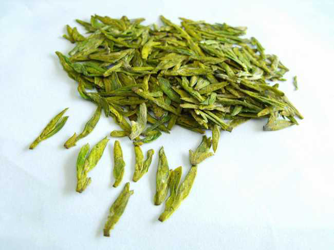外形特点
条索纤细、卷曲、呈螺形，茸毛遍布全身，色泽银绿隐翠，毫风毕露，茶芽幼嫩、完整，无叶柄、无“裤子脚”、无黄叶和老片。
内在特点
有特殊浓烈的芳香，即具有花果香味。泡开后滋味鲜醇、回味甘厚，汤色嫩绿整齐，幼芽初展，芽大叶小。在鉴别真伪时，可用真品进行对照，凡不具备上述特点者即可却认为伪冒品。
冲泡方法
碧螺春的泡法根据不同的茶质，有不同的泡法：
一、外形紧结重实的茶
1、烫杯之后，先将合适温度的水冲入杯中，然后取茶投入，不加盖。
2、一段时间之后，茶汤凉至适口，即可品茶。此乃一泡。茶叶评审中，以 5 分钟为标准，茶汤饮用和闻香的温度均为 45——55℃ 若高于 60℃ 则烫嘴也烫鼻；低于 40℃ 香气较低沉，味较涩。这个时间不易掌握。如用玻璃杯，一般用手握杯子，感觉温度适合即饮;如用盖碗，则稍稍倒出一点茶汤至手背以查其温度。
3、第一泡的茶汤，尚余三分之一，则可续水。此乃二泡。如若茶叶瘦弱的茶，二泡茶汤正浓，饮后舌本回甘，齿颊生香，余味无量。饮至三泡，则一般茶味已淡。
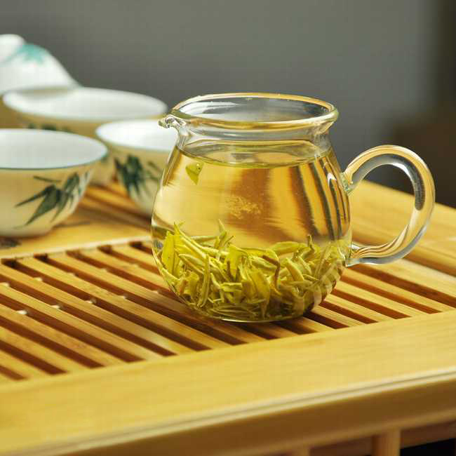二、条索松展的茶
1、烫杯后，取茶入杯。此时较高的杯温已隐隐烘出茶香。
2、冲入适温的水，至杯容量三分之一(也可少一些，但需覆盖茶叶)。这种茶本身比较舒展，无需使用水的冲力，反而易烫伤嫩叶。采取的办法是如用玻璃杯，则沿杯边注水，盖碗则将盖子反过来贴在茶杯的一边，将水注入盖子，使其沿杯边而下。然后悄悄摇晃茶杯，使茶叶充分浸润。
3、稍停约两分钟，待干茶吸水伸展，再冲水至满。冲水方法如前。此时 茶叶或徘徊飘舞，或游移于沉浮之间，别具茶趣。
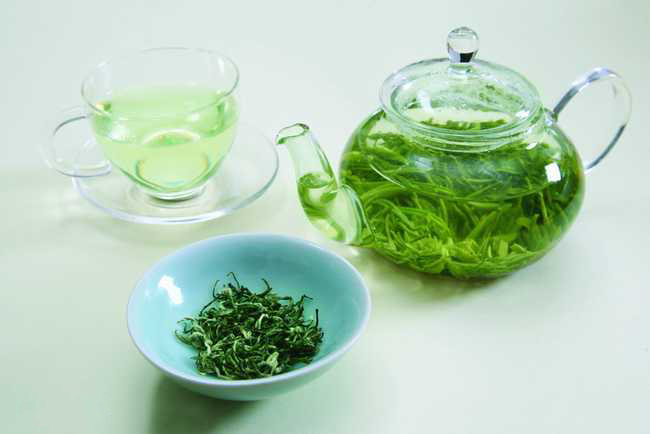饮用方法
1．请选择安静优雅，空气清新的环境。
2．请选用无异味洁净的茶杯茶具。
3．请选用优质矿泉水。
4．先注水后放茶叶，且严格确认在放入茶叶时注入杯中的开水已冷却至摄氏70度以下。
价值功能
碧螺春是绿茶代表产品之一，茶叶成分对人体的生理、药理功效是多种多样的，含有大量有益于人体健康的化合物。
贮藏方法
碧螺春贮藏条件十分讲究。传统的贮藏方法是纸包茶叶，袋装块状石灰，茶、灰间隔放置缸中，加盖密封吸湿贮藏。随着科学的发展，往年亦有采用三层塑料保鲜袋包装，分层紧扎，隔绝空气，放在10°C以下冷藏箱或电冰箱内贮藏，久贮年余，其色、香、味犹如新茶，鲜醇爽口。
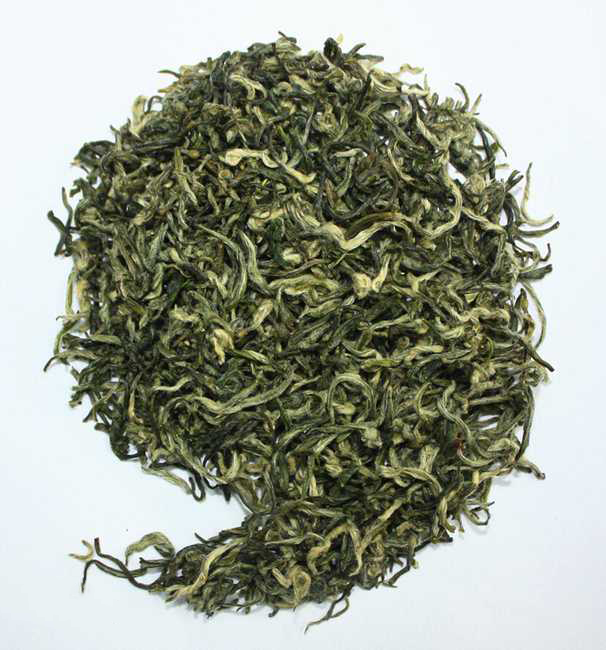茶叶文化
茶道
碧螺春茶茶艺(上投法）
器皿选择
玻璃杯四只，电随手泡一套，木茶盘一个，茶荷一个，茶道具—套，茶池一个，茶巾—条，香炉一个，香一支。
基本程序
1．点香——焚香通灵
中国茶人认为“茶须静品，香能通灵。”在品茶之前，首先点燃这支香，让我们的心平静下来，以便以空明虚静之心，去体悟这碧螺春中所蕴含的大自然的信息。
2．涤器——仙子沐浴
今天我们选用玻璃杯来泡茶。晶莹剔透的杯子好比是冰清玉洁的仙子，“仙子沐浴”即再清洗一次茶杯，以表示我对各位的崇敬之心。
3．凉水——玉壶含烟
冲泡碧螺春只能用80℃左右的开水，在烫洗了茶杯之后，我们不用盖上壶盖，而是敞着壶，让壶中的开水随着水汽的蒸发而自然降温。请看这壶口蒸汽氤氲，所以这道程序称之为“玉壶含烟”。
4．赏茶——碧螺亮相
“碧螺亮相”即请大家传着鉴赏干茶。碧螺春有“四绝”——“形美、色艳、香浓、味醇”，赏茶是欣赏它的第一绝：“形美”。生产一斤特级碧螺春约需采摘七万个嫩芽，你看它条索纤细、卷曲成螺、满身披毫、银白隐翠，多像民间故事中娇巧可爱且羞答答的田螺姑娘。
5．注水——雨涨秋池
唐代李商隐的名句“巴山夜雨涨秋池”是个很美的意境，“雨涨秋池”向玻璃杯中注水，水只宜注到七分满，留下三分装情。
6．投茶——飞雪沉江
即用茶导将茶荷里的碧螺春依次拨到已冲了水的玻璃杯中去。满身披毫、银白隐翠的碧螺春如雪花纷纷扬扬飘落到杯中，吸收水分后即向下沉，瞬时间白云翻滚，雪花翻飞，煞是好看。
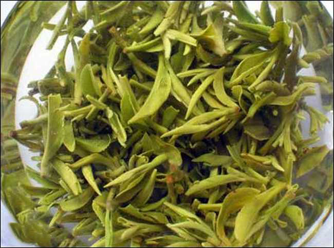7．观色——春染碧水
碧螺春沉入水中后，杯中的热水溶解了茶里的营养物质，逐渐变为绿色，整个茶杯好像盛满了春天的气息。
8．闻香——绿云飘香
碧绿的茶芽，碧绿的茶水，在杯中如绿云翻滚，氤氲的蒸汽使得茶香四溢，清香袭人。这道程序是闻香。
9．品茶——初尝玉液
晶饮碧螺春应趁热连续细品。头一口如尝玄玉之膏，云华之液，感到色淡、香幽、汤味鲜雅。
10．再品——再啜琼浆
这是品第二口茶。二啜感到茶汤更绿、茶香更浓、滋味更醇，并开始感到了舌本回甘，满口生津。
11．三品——三品醍醐
醍醐直释是奶酪。在佛教典籍中用醍醐来形容最玄妙的“法味”。品第三口茶时，我们所品到的已不再是茶，而是在品太湖春天的气息，在品洞庭山盎然的生机，在品人生的百味。
12．回味——神游三山
古人讲茶要静品、茶要慢品、茶要细品，唐代诗人卢仝在品了七道茶之后写下了传颂千古的《茶歌》，他说：“五碗肌骨清，六碗通仙灵，七碗吃不得也，唯觉两腋习习清风生。”在品了三口茶之后，请各位嘉宾继续慢慢地自斟细品，静心去体会七碗茶之后：“清风生两腋，飘然几欲仙。神游三山去，何似在人间”的绝妙感受。
产品荣誉
2020年7月27日，洞庭（山）碧螺春茶入选中欧地理标志第二批保护名单。
2022年11月29日，苏州洞庭湖碧螺春制作技艺申遗成功，列入联合国教科文组织人类非物质文化遗产代表作名录。
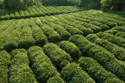